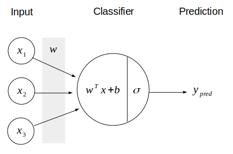
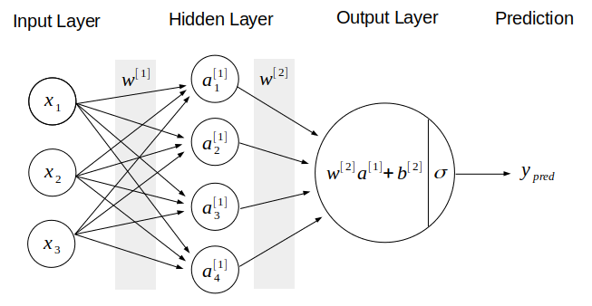

โดย ชิตพงษ์ กิตตินราดร | มกราคม 2563
บทนี้เราจะมาลองสร้างโมเดล Neural network อย่างง่ายๆ ด้วยการใช้ Deep learning framework ที่ชื่อ TensorFlow
เป้าหมายของเราคือการสร้างโมเดลพยากรณ์ว่าลายมือเขียนตัวเขียน 0-9 จากฐานข้อมูล MNIST นั้น เขียนว่าตัวเลขอะไร
ตัวอย่างชุดข้อมูล MNIST, ภาพโดย Josef Steppan - Own work, CC BY-SA 4.0
ปัญหานี้เป็นปัญหาที่เหมาะสมกับ Deep learning เพราะข้อมูล Input เป็นภาพ ซึ่งเป็นข้อมูลที่ไม่มีโครงสร้าง (Unstructured data) และมีจำนวน Feature เยอะมาก โดยในกรณีชุดข้อมูล MNIST นี้ แต่ละภาพมีขนาด 28 x 28 Pixel นั่นคือมี 784 Feature นั่นคือ จนถึง
เราจะเริ่มด้วยการ Import library ที่ต้องใช้ ซึ่งนอกจาก numpy และ matplotlib ตามปกติ เราจะใช้ tensorflow.keras เพื่อโหลดชุดข้อมูลจาก .datasets, โครงสร้างโมเดลจาก .models, และโครงสร้างของ Layer ต่างๆ จาก .layers
Keras คือ High-level interface ของ TensorFlow ซึ่งเป็น Low-level framework เปรียบเทียบเหมือนกับ TensorFlow เป็นวงจรสวิทช์ไฟ เราอาจควบคุมว่าจะเปิดปิดไฟดวงไหนด้วยการเชื่อมสายไฟในสวิทช์ไฟเข้าด้วยกัน แต่จะใช้เวลาและไม่สะดวก Keras เปรียบเสมือนแผงสวิทช์ไฟที่มีสวิทช์และหน้ากากเรียบร้อย ทำให้เราควบคุมการเปิดปิดไฟได้ง่ายและสะดวกกว่ามาก
import numpy as np
import matplotlib.pyplot as plt
from tensorflow.keras.datasets import mnist
from tensorflow.keras.models import Sequential
from tensorflow.keras.layers import Dense, Dropout, Flatten
Class ต่างๆ ที่เราโหลดมา จะอธิบายภายหลังในส่วนการสร้างโมเดล
จากนั้นเราก็โหลดชุดข้อมูล MNIST โดย TensorFlow ได้ฝัง MNIST ไว้ให้แล้ว เพราะเป็นชุดข้อมูลยอดนิยมที่เอาไว้ฝึกและทดสอบโมเดล การโหลดทำได้โดยเรียก:
# Load the MNIST data
(X_train, y_train), (X_test, y_test) = mnist.load_data()
# Check data dimension
print("X_train data shape is", X_train.shape)
print("y_train data shape is", y_train.shape)
print("X_test data shape is", X_test.shape)
print("y_test data shape is", y_test.shape)
# Check data type
print("X_train data type is", X_train.dtype)
print("y_train data type is", y_train.dtype)
print("X_test data type is", X_test.dtype)
print("y_test data type is", y_test.dtype)
เราควรเช็คมิติข้อมูลทุกครั้งที่โหลดข้อมูลมา พบว่า Train set มี 60,000 รายการ ขนาด 28 x 28 Pixel ส่วน Test set มี 10,000 รายการ ส่วน Data Type เป็น uint8
X_train data shape is (60000, 28, 28)
y_train data shape is (60000,)
X_test data shape is (10000, 28, 28)
y_test data shape is (10000,)
X_train data type is uint8
y_train data type is uint8
X_test data type is uint8
y_test data type is uint8
จากนั้นมาลองดูตัวอย่างข้อมูลกัน เนื่องจากเรารู้ว่าข้อมูลเป็นภาพ เราสามารถใช้ Method .imshow ของ matplotlib แสดงภาพได้ทันที:
# Visualise sample data
img_index = 999
print(y_train[img_index])
plt.imshow(X_train[img_index])
ได้ภาพขนาด 28 x 28 สังเกตว่ามีสี เพราะเป็นค่าตั้งต้นของ matplotlib เอง ในความเป็นจริงข้อมูลไม่ได้มีสี

ต่อมา เราจะ Preprocess ข้อมูลให้พร้อมใช้งานขึ้น สิ่งที่จะทำมีดังนี้:
input_shape ใน Layer แรกของ Model โดยไม่ต้องระบุจำนวนรายการ ดังนั้น มิติข้อมูลสำหรับ Layer แรก คือ (28, 28, 1) อนึ่งเราต้องกำหนดมิติข้อมูลสำหรับ Layer แรกเท่านั้น ส่วน Layer อื่น TensorFlow จะอนุมานให้เอง# Reshaping the array to 3-d for Keras
X_train = X_train.reshape(X_train.shape[0], 28, 28, 1)
X_test = X_test.reshape(X_test.shape[0], 28, 28, 1)
# Specify input shape for the mode's 1st layer
input_shape = (28, 28, 1)
# Convert data type to float so we can get decimal points after division
# Also scope down X_train and X_test to 2000:400 samples
X_train = X_train[:2000, :, :, :].astype('float32')
X_test = X_test[:400, :, :, :].astype('float32')
# Also scope down y_train and y_test to 2000:400 samples
y_train = y_train[:2000]
y_test = y_test[:400]
# Normalising all data by dividing by max brightness value.
X_train /= 255
X_test /= 255
print('X_train shape:', X_train.shape)
print('X_test shape:', X_test.shape)
print('y_train shape:', y_train.shape)
print('y_test shape:', y_test.shape)
เช็คมิติข้อมูลอีกทีก็จะได้จำนวนรายการและมิติตามที่ต้องการ
X_train shape: (2000, 28, 28, 1)
X_test shape: (400, 28, 28, 1)
y_train shape: (2000,)
y_test shape: (400,)
ตอนนี้เราก็พร้อมจะสร้างโมเดลแล้ว ในขั้นนี้ เราต้องออกแบบว่าโมเดลของเราจะมีโครงสร้างอย่างไร ดังนั้น สิ่งที่ต้องตัดสินใจก็คือ:
loss), กลไกการ Optimise ที่ใช้ (Argument optimizer), และวิธีการชี้วัดความแม่นยำ (Argument metrics) โดยตัวเลือกต่างๆ จะอธิบายภายหลังเช่นกันเมื่อตัดสินใจได้แล้วว่าโมเดลจะมีโครงสร้างและคุณสมบัติอย่างไร ขั้นตอนในการสร้างโมเดลก็คือ:
Sequential ให้อยู่ใน Instance object โดยเราจะใช้ชื่อ Instance นี้ว่า model.add เพื่อสร้าง Layer ทีละชั้น จากซ้ายไปขวา โดยกำหนด Argument ที่สอดคล้องกับโครงสร้าง Layer ที่เราออกแบบไว้.compile# Build and compile model
model = Sequential()
model.add(Flatten())
model.add(Dense(100, activation='relu', input_shape=input_shape))
model.add(Dropout(0.2))
model.add(Dense(10, activation='softmax'))
model.compile(optimizer='adam',
loss='sparse_categorical_crossentropy',
metrics=['accuracy'])
สังเกต Layer สุดท้าย คือ Dense(10, activation='softmax') ใช้ Softmax activation function ซึ่งทำให้โมเดลสามารถ Output แบบ Multiclass ได้ โดยเราต้องกำหนดจำนวน Neuron เท่ากับจำนวน Class ที่เป็นไปได้ ซึ่งก็คือ 10 นั่นเอง
จากนั้นก็เริ่มเทรนโดยเรียก Method .fit พร้อมกำหนด Argument ต่างๆ ซึ่งหลักๆ ก็มี:
epochs จำนวนรอบของการเทรน โดยแต่ละ Epoch จะทำให้ Loss ลดลง ในขณะที่ Accuracy เพิ่มbatch_size ขนาดของ Batch ซึ่งก็คือจำนวนรายการข้อมูลที่จะให้ Optimiser คำนวนในหนึ่งครั้ง เช่น ข้อมูลมี 2,000 รายการ ถ้ากำหนด Batch size เป็น 32 แปลว่า Optimiser จะต้องทำงาน 62.5 ครั้ง จึงจะครบทั้ง 2,000 รายการ และถ้ากำหนด Epoch เป็น 20 ก็หมายถึงการทำงาน 62.5 ครั้ง 20 รอบ การกำหนด Batch size จะมีผลโดยตรงกับความเร็วในการคำนวน ยิ่ง Batch ใหญ่ ยิ่งคำนวนเร็ว แต่ Batch ที่ใหญ่เกินไปอาจทำให้ข้อมูลที่คำนวนมีขนาดใหญ่เกินกว่า Memory ของเครื่องเราจะรองรับได้ ทั้งนี้ใน การกำหนด Batch size แบบต่างๆ จะมีชื่อเรียกเฉพาะ เช่น Batch gradient descent แปลว่า Batch size เท่ากับจำนวนรายการข้อมูล ไม่มีการแบ่ง, Mini-batch gradient descent คือการแบ่งข้อมูลออกเป็น Batch, ส่วน Stochastic gradient descent คือ Batch size เท่ากับ 1 เราจะอธิบายเรื่องนี้ละเอียดในภายหลังvalidation split เราสามารถกัน Train set ส่วนหนึ่งไว้เป็น Validation set ซึ่งก็คือข้อมูลชุดที่โมเดลไม่เคยเห็น Keras จะคำนวน Loss และความแม่นยำกับ Validation set ทุกครั้งที่คำนวนจบ 1 Epoch และแสดงผลให้เราเห็น อนึ่งการแบ่ง Validation set จะตัดเอาส่วนสุดท้ายของ Train set มาเลยโดยไม่สุ่ม ดังนั้นเราจึงควรสุ่ม Shuffle ข้อมูลให้เรียบร้อยตั้งแต่แรก รายละเอียดเกี่ยวกับการแบ่งชุดข้อมูลออกเป็น Train / Validation / Test set จะอธิบายละเอียดในบทต่อๆ ไป# Fit the model to data
model.fit(X_train, y_train, epochs=20, batch_size=32, validation_split=0.2, verbose=1)
การเทรนโมเดล Neural network อาจใช้เวลานานมาก ขึ้นอยู่กับจำนวนรายการและ Feature ข้อมูล รวมทั้งโครงสร้าง Layer เช่นจำนวน Layer และจำนวน Neuron โดย TensorFlow จะช่วยเราด้วยการแสดงความก้าวหน้าของการเทรนแต่ละ Epoch เป็น Progress bar และเวลาที่ใช้ เพื่อให้เราสามารถประเมินได้ว่าจะต้องรออีกนานเท่าใด
ผลที่ได้ออกมาดังนี้:
Train on 1600 samples, validate on 400 samples
Epoch 1/20
[===] - 1s 491us/sample - loss: 1.4701 - accuracy: 0.5881 - val_loss: 0.7175 - val_accuracy: 0.8275
Epoch 2/20
[===] - 0s 158us/sample - loss: 0.6571 - accuracy: 0.8213 - val_loss: 0.4700 - val_accuracy: 0.8600
Epoch 3/20
[===] - 0s 146us/sample - loss: 0.4681 - accuracy: 0.8744 - val_loss: 0.3726 - val_accuracy: 0.8925
. . . . . . .
. . . . . . .
. . . . . . .
Epoch 18/20
[===] - 0s 233us/sample - loss: 0.0807 - accuracy: 0.9844 - val_loss: 0.2492 - val_accuracy: 0.9375
Epoch 19/20
[===] - 0s 174us/sample - loss: 0.0675 - accuracy: 0.9906 - val_loss: 0.2474 - val_accuracy: 0.9275
Epoch 20/20
[===] - 0s 174us/sample - loss: 0.0638 - accuracy: 0.9881 - val_loss: 0.2490 - val_accuracy: 0.9300
สังเกตว่าแต่ละ Epoch ที่เทรน Loss และ Validation loss จะลดลงเรื่อยๆ สอดคล้องกับ Accuracy และ Validation accuracy ที่เพิ่มขึ้นเรื่อยๆ ซึ่งในกรณีของเราไปหยุดที่ Validation accuracy 93% เราสามารถใช้ผลนี้เป็นตัวบ่งชี้ว่าควรจะปรับ Hyperparameter ต่างๆ ของโมเดลหรือไม่อย่างไร เพื่อทำให้โมเดลมีความแม่นยำมากขึ้น รวมทั้งสามารถวิเคราะห์ปัญหา Bias/variance ด้วยการเปรียบเทียบข้อมูลจากการเทรนกับข้อมูลจาก Validation set
เราสามารถ Visualise ความก้าวหน้าของการฝึกโมเดลได้ โดยการใช้ matplotlib พล็อตค่าจาก model.history.history ซึ่งเก็บตัวเลขการเทรนไว้ใน Dictionary key:
# Review model's progress
plt.figure(figsize=(9,6))
plt.plot(model.history.history['accuracy'], label='Train accuracy')
plt.plot(model.history.history['val_accuracy'], label='Validation accuracy')
plt.ylabel('Value')
plt.xlabel('No. epoch')
plt.legend()
plt.show()
ภาพที่ได้คือ:

จะเห็นว่าโมเดลของเราสามารถเพิ่ม Train accuracy ได้อย่างต่อเนื่อง อย่างไรก็ตาม ดูเหมือน Validation accuracy จะไม่ยอมเพิ่มจากจุดสูงสุด คือประมาณ 0.93 ตั้งแต่ Epoch ที่ 8 จากข้อมูลนี้เราสามารถวิเคราะห์ได้ว่าโมเดลมีปัญหา Variance ซึ่งก็คือการที่ไม่สามารถ Generalise ให้พยากรณ์ข้อมูลที่ไม่เคยเห็นได้ดีเท่าที่ควร ดังนั้นข้อมูลนี้จึงบอกเราว่าเราควรลองมาตรการต่างๆ ที่จะช่วยลดปัญหา Variance เช่น การเพิ่มขนาด Validation set การเพิ่มหรือปรับเทคนิคการ Regularisation เป็นต้น
ต่อมา เราก็นำทดสอบความแม่นยำของโมเดล กับ Test set ซึ่งแยกไว้ตั้งแต่แรกอีกที โดยการใช้ Method .evaluate:
# Evaluate model's accuracy
score = model.evaluate(X_test, y_test, verbose=0)
print("Loss is", score[0])
print("Accuracy score is", score[1])
ได้ผลใกล้เคียงกับ Validation accuracy คือ 92.25%
Loss is 0.3142095559835434
Accuracy score is 0.9225
ตรงจุดนี้อาจมีคำถาม ว่าทำไมเราต้องทดสอบกับ Test set อีก ทั้งๆ ที่ได้ทดสอบกับ Validation set แล้ว คำตอบคือ Validation set มีหน้าที่เป็นชุดทดสอบให้เราปรับแต่งค่าต่างๆ ของโมเดล ซึ่งทำให้เกิดความเสี่ยงที่เราจะปรับค่าเพื่อ "เอาใจ" Validation set ส่งผลให้เรา Overfit validation set ทำให้เราไม่รู้ว่าโมเดลของเราจะมีความสามารถในการพยากรณ์ข้อมูลจริงที่ไม่เคยมองเห็นเพียงใด ดังนั้นเราจึงต้องทดสอบโมเดลที่ปรับแต่งเสร็จแล้ว กับ Test set อีกที เพื่อให้ได้ผลที่เที่ยงธรรม ไม่หลอกตัวเอง
สุดท้าย เรามาลองพยากรณ์กันเลย โดยป้อนภาพที่มี Index ที่ต้องการจาก X_test ลงไปใน Method .predict โดยอย่าลืมแปลงมิติข้อมูลให้สอดคล้องกับตอนแรก นั่นก็คือ (จำนวนรายการ, 28, 28, 1) ซึ่งก็คือ (1, 28, 28, 1) นั่นเอง
Method .predict จะ Output ออกมาเป็น Array ของความเป็นไปได้ การตีความก็คือเราจะเลือก Index ที่มีความเป็นไปได้สูงสุดเป็นคำตอบ เราสามารถใช้ Method .argmax ในการ Output index ที่มีค่าสูงสุดได้:
# Make a prediction
image_index = 12
plt.imshow(X_test[image_index].reshape(28, 28),cmap='Greys')
pred = model.predict(X_test[image_index].reshape(1, 28, 28, 1))
print("Prediction probability array is:")
count = 0
for i in pred.squeeze():
print(count, ":", i)
count += 1
print("From which the max choice is:", pred.argmax())
Prediction probability array is:
0 : 6.983635e-06
1 : 1.8324994e-07
2 : 7.03581e-05
3 : 3.01667e-05
4 : 0.005716639
5 : 0.00045127788
6 : 9.964272e-07
7 : 0.0036463942
8 : 3.6717152e-05
9 : 0.99004024
From which the max choice is: 9

จะเห็นว่าภาพที่ 12 ที่เราเลือก เป็นภาพของเลข 9 โมเดลได้พยากรณ์ว่า 9 โดยให้ความเป็นไปได้ 99%
การเปรียบเทียบภาพจริงกับค่าที่พยากรณ์ได้ จะช่วยเป็นข้อมูลให้เราวิเคราะห์ข้อผิดพลาดของโมเดลได้ว่าเป็นอย่างไรและน่าจะเกิดจากอะไร โดยจะอธิบายเรื่อง Error analysis เพิ่มเติมในบทต่อๆ ไป
บทต่อไป เราจะมาเจาะลึกเกี่ยวกับโครงสร้างของโมเดลและตัวเลือกของ Optimisation algorithm
หน้าแรก | บทที่ 14 Neural Network Algorithm | บทที่ 16 Neural Network Vanishing Gradients